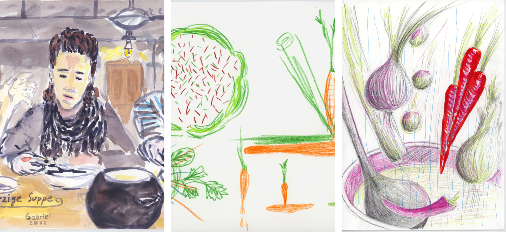
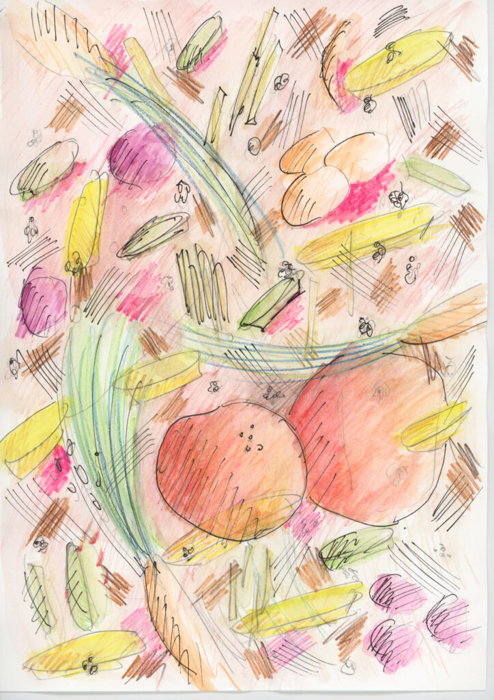
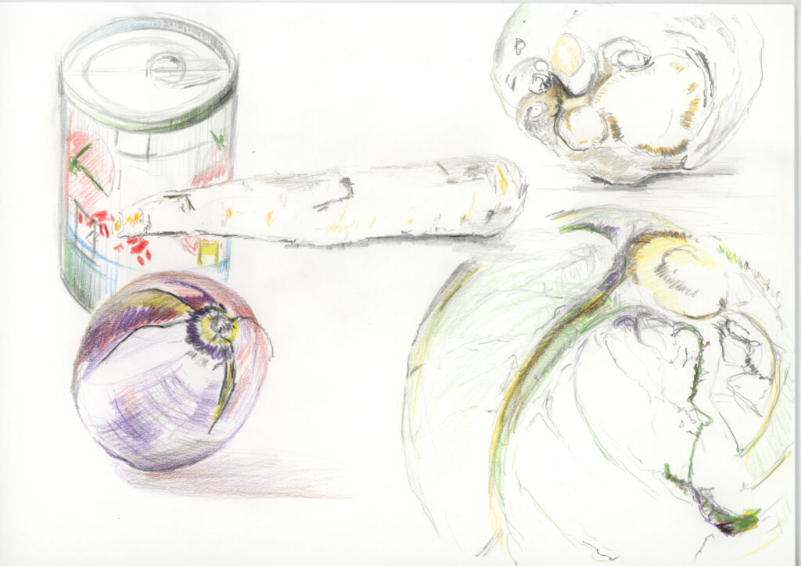
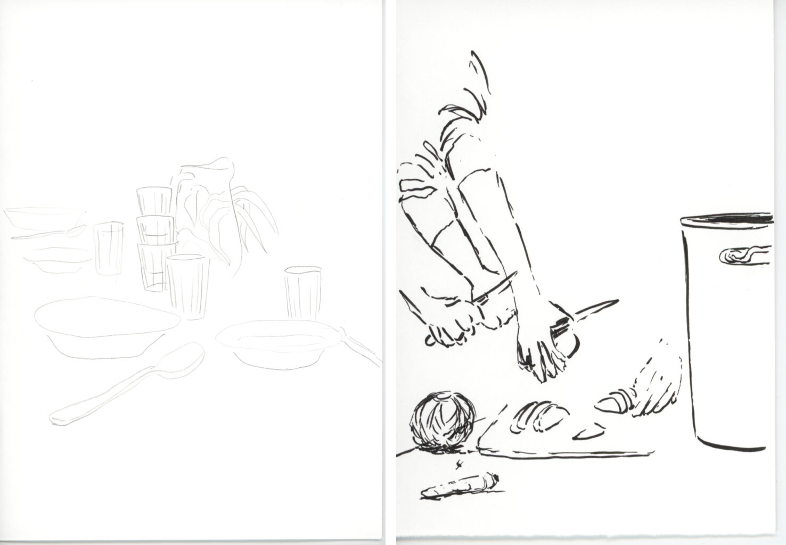
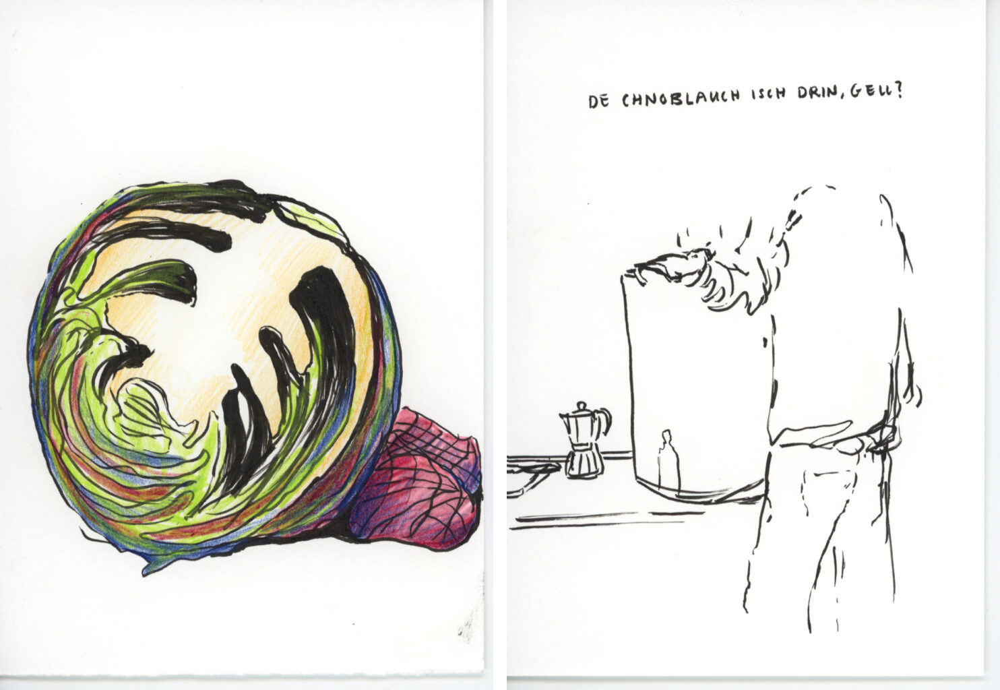
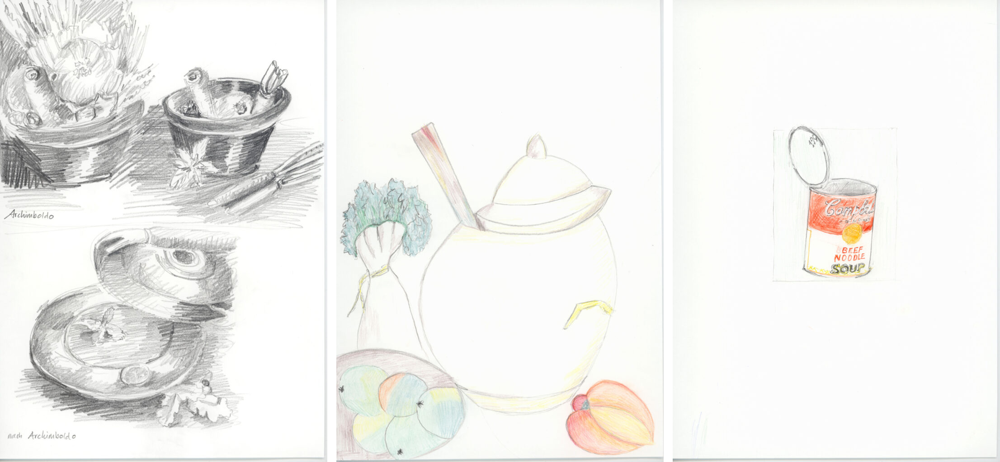
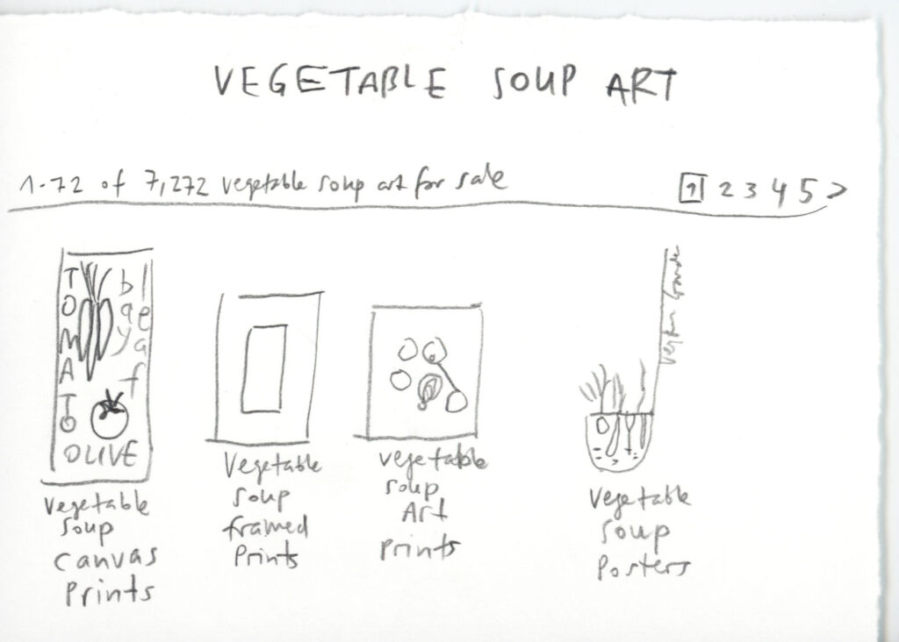
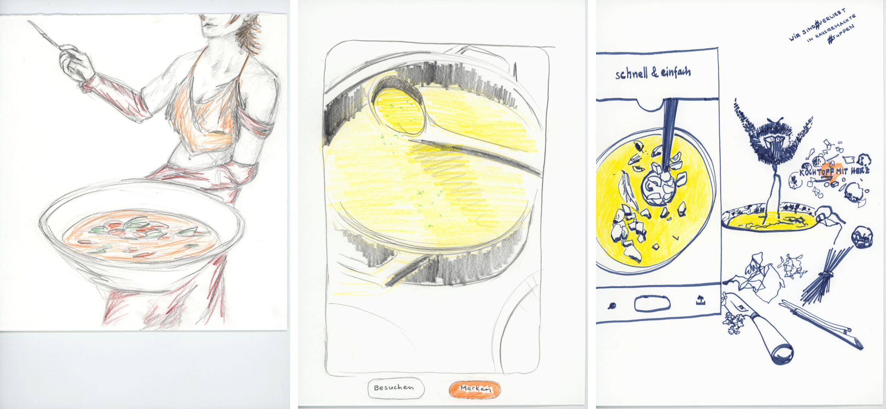
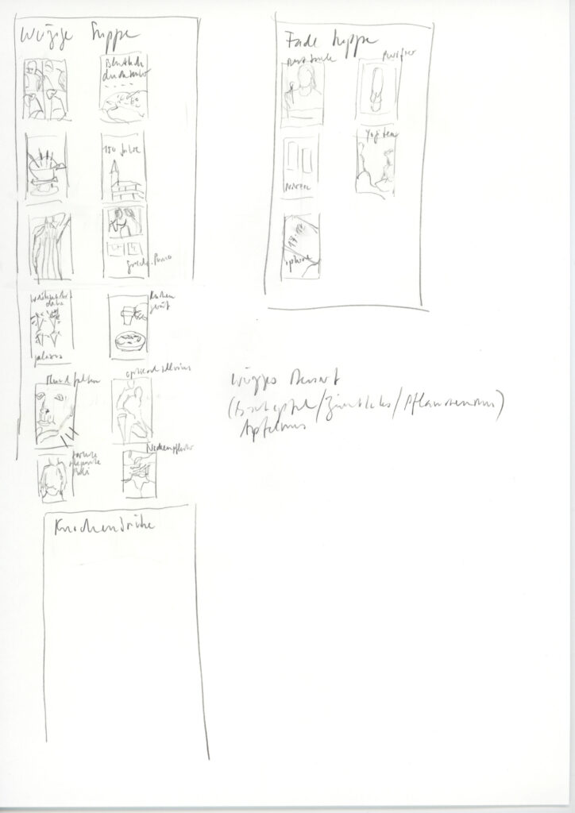

Im Praxisforum sollen aktuelle Diskurse und Forschungsfragen mit der Lehrtätigkeit im Fach Bildnerisches Gestalten an den Mittelschulen verknüpft werden. Die kostenfreie Veranstaltung richtet sich an Lehrpersonen und Alumni. Das diesjährige Forum befasst sich mit verschiedenen Fragen zur Rolle des Internets in Bezug auf Bildprozesse: Welche Bedeutung kommt einem Bild in unserer aktuellen Lebenswelt zu? Woher kommt es, was bewirkt es? Was bedeutet es, heutzutage ein Bild zu schaffen und in die digitale Flut loszulassen? Wie unterscheiden sich Bildprozesse, die vom Internet beeinflusst werden von solchen, die das Internet meiden? Wie soll das Internet als künstlerisches Recherche-Tool im Unterricht genutzt
Im Praxisforum sollen aktuelle Diskurse und Forschungsfragen mit der Lehrtätigkeit im Fach Bildnerisches Gestalten an den Mittelschulen verknüpft werden. Die kostenfreie Veranstaltung richtet sich an Lehrpersonen und Alumni. Das diesjährige Forum befasst sich mit verschiedenen Fragen zur Rolle des Internets in Bezug auf Bildprozesse: Welche Bedeutung kommt einem Bild in unserer aktuellen Lebenswelt zu? Woher kommt es, was bewirkt es? Was bedeutet es, heutzutage ein Bild zu schaffen und in die digitale Flut loszulassen? Wie unterscheiden sich Bildprozesse, die vom Internet beeinflusst werden von solchen, die das Internet meiden? Wie soll das Internet als künstlerisches Recherche-Tool im Unterricht genutzt
3. Praxisforum Kunstpädagogik
Im Rahmen des 3. Praxisforum Forschung Kunstpädagogik realisierten Malin Widén und Rahel Steiner einen Workshop zum Thema Bildprozesse in der Zeit der digitalen Transformation.
Auftrag / Kontext
Ausgangslage des gestalterischen Workshops waren zwei theoretische Inputs. Jean-Pierre Grüter gab einen historischen Abriss zur Medienpädagogik und Visuellen Kommunikation und sprach über die Postinternet-Ära, Re-Begriffe, den lebendigen Prozess von Autorschaft und den erweiterten Bildbegriff. Rahel Steiner und Malin Widén berichteten aus der Praxis und von ihren Recherchen bezüglich Bildfindung, Internet und neue Medien im BG-Unterricht, der Museumspädagogik und der Illustration. Anschliessend wurden im Workshop verschiedene kunstpädagogische Haltungen im Umgang mit dem Internet erforscht. Es wurde der Frage nachgegangen, wie unterschiedliche Inspirationsquellen eine zeichnerische Bildrecherche beeinflussen. Am Beispiel der Illustration wurden einerseits das analoge Zeichnen, andererseits Suchplattformen im Internet aber auch herkömmliche Umgebungen untersucht, um Bildideen zu generieren oder nachzuvollziehen. In vier Gruppen wurden zeichnerische Vorgehensweisen anhand des Themas „Würzige Gemüsesuppe“ erforscht, welche parallel dazu in der Küche nebenan gekocht wurde: 1. Innere Bildwelten (zeichnend denken, zeichnen aus dem Kopf), 2. Realität: Zeichnen ausgehend von der realen Welt, 3. Kunstgeschichte: Zeichnen ausgehend von kunstgeschichtlichen Referenzen (Bibliothek oder online Bilddatenbank (z. B. www.bildindex.de)) 4. Internet: Zeichnen ausgehend von Bildern von div. Plattformen wie Google, Pinterest, Instagram oder Applikationen wie Dall-E, Craiyon und Wonder AI. Jede*r Teilnehmende entschied sich für eine Inspirationsquelle, wobei die technische Umsetzung frei wählbar war. Anschliessend wurden die aus dem Workshop hervorgegangenen Erkenntnisse präsentiert und diskutiert.
Beobachtungen zu den einzelnen Gruppen:
1. Vertieftes Arbeiten, Flow, intensive Auseinandersetzung damit, was für einen diese würzige Gemüsesuppe bedeutet. Auffallend viele Visualisierungen von Ideen und Versuche, das eigene Wissen darüber mit künstlerischen Mitteln darzustellen (Farbe/Form, Stimmung, Erinnerung, analytisch, kontrastreiche Bilder). Die fehlende Bildvorlage war herausfordernd und wurde als schwierig empfunden.


2. Beobachtung, dokumentarisch, verhaltenere Linien, wissenschaftlicher Anspruch. Im Fokus waren eher die Geschehnisse und Tätigkeiten im Raum, Gemüsestudien und Dialoge. Das genaue Hinsehen schärfte die Wahrnehmung von Details. Das Finden von Bildausschnitten und die Auswahl von Handlungssequenzen wurden relevant.



3. Fokus auf Technik und Kopie. Die spezifische Suche nach dem Begriff war in der kurzen Zeit nicht so leicht, dementsprechend wurde das Thema erweitert (z. B. durch Töpfe, Gemüse, usw.).


4. Notizartig, wenig Zeichnung. Der „Suchstress des Durchklickens“ wird in den Zeichnungen spürbar, das Herumspringen in verschiedensten Kontexten ist spannend aber irgendwann beliebig. Fokussiertes Zeichnen ist kaum möglich, da Werbung und andere Inhalte ständig ablenken. Bei den Bildern, die durch künstliche Intelligenz generiert wurden, werden anatomische und räumliche Fehler zentral. Diese Bilder werfen viele Fragen auf, wie z. B. auch „Warum ist diese Frau im Bild?“ oder „Wo bleibt die Suppe?“.


Fazit:
In der Diskussion wurde deutlich, dass Lernende bei der Bildfindung gerne den einfachsten und schnellsten Weg wählen und die digitalen Medien für sie dazu ein selbstverständliches Hilfsmittel sind. Sie tendieren dazu, die erstbesten Bildvorlagen aus dem Internet eins zu eins zu kopieren. Für Lehrpersonen ist es eine Herausforderung, die Lernenden auf solche Prozesse aufmerksam zu machen und sie zu ermutigen, Bilder nicht gedankenlos zu übernehmen, sondern sich selber ein Bild von etwas zu machen. Eine solche Sensiblisierung könnte beispielsweise in einem Unterrichtsprojekt geschehen, welches das Thema Bildrecherche im Digitalen und Analogen oder das Kopieren von Bildern zum Inhalt hat.
Von verschiedenen Seiten wurde auch gesagt, dass Jugendliche gerne besser realistisch zeichnen lernen möchten und sie das vertiefte Zeichnen, z. B. Abzeichen von Gegenständen, dem Alter entsprechend auch gerne machen. Die Umwelt und insbesondere die digitale Welt liefern uns zwar Bildmaterial und Möglichkeiten, lenken uns aber auch ab von der eigenen Schöpferkraft, die offensichtlich sehr schnell aktiviert werden und gezielte Bildinhalte/Ideen generieren kann. Die aktuelle Lebenswelt inkl. Digitalisierung scheint im Widerspruch zu dieser Praxis zu stehen, dies muss aber nicht so sein. Ernsthafte Recherchen in der inneren Bildwelt (Skizzen) zu Beginn eines Projekts können wertvoll sein, um den Fokus bei der individuellen Ideenwelt (Umgang mit Inhalten, Form, Bildsprache) zu behalten. Darauf bezugnehmend kann von den Lernenden gezielter recherchiert werden, ohne in unselbständiges Kopieren zu verfallen oder sich im Netz bei anderen Themen zu verzetteln. Eine ergänzende Praxis kann gepflegt werden und die digitalen Recherchetools können gezielt als Hilfsmittel eingesetzt werden.
Malin Widen, Rahel Steiner, Februar 2023
Im Kontext der Medienpädagogik und Ausblick
Der Workshop hat sich mit digitalen Bildquellen aus dem Internet und ihrer Nutzbarkeit für die ästhetische Bildung beschäftigt. Es gilt hier nun einige Begriffe zu klären und einen Ausblick auf mögliche Folgeveranstaltungen zu geben.
Für die BG-Lehrpersonenen stellt die Auseinandersetzung mit neuen Technologien und Medien eine grosse Herausforderung dar. Dies ist aber offensichtlich eine Konstante in didaktischen Kontexten. Die Zeit bleibt nicht stehen. Die Digitalisierung traditioneller Medien, Computerspiele, das Internet, digitale Netzwerke und soziale Plattformen, virtuelle Realität, künstliche Intelligenz usw. verlangen nach einer Medienpädagogik und der Erarbeitung von Medienkompetenzen. Da hier im allgemeinen Sprachgebrauch die neuen und neuesten Medien gemeint sind, sind diese Begriffe eigentlich unscharf, denn man kann die Medien ganz allgemein als das Verstehen, was zwischen dem Menschen und Welt liegt. Wir unterscheiden in unserem Fach zwischen klassischen, neuen und digitalen Medien. Karl Marx schreibt an einer Stelle, dass die Reichweite des Menschen in der Aneigung von Welt soweit reicht, wie seine Mittel reichen. Wenn dies zutrifft und wir Weltaneignung mit Bildung und Mittel mit Medien gleichsetzen, dann ist Medienkompetenz, also der Umgang mit den Medien, unbedingt ein Teil der Lebenskompetenz und damit auch zentraler Inhalt der Bildung. Ich setze dabei voraus, dass wir unter Bildung ganz knapp den Prozess der Welt- und Selbstaneigung verstehen. Adorno und andere haben das folgendermassen zusammengefasst: Kultur ist die objektive Seite der Bildung und Bildung ist die subjektive Seite der Kultur.
Die hiermit beschriebene Verbindung zwischen Kultur, bzw. aktueller Medienkultur und Bildung müssen wir als Auftrag verstehen, der uns auch immer wieder überfordert. Die Menschheit ist zwischen eins und vier Millionen Jahre alt. Den allergrössten Teil dieser Zeit herrschte eine orale Kultur. Schriftkulturen kennt man seit rund 8000 Jahren und der Buchdruck ist etwa 500 Jahre alt. Das Internet besteht seit rund 25 Jahren. Wenn man berücksichtigt, wie lange es gedauert hat, die Medien des Sprechens und Schreibens zu bewältigen und die entsprechenden technischen Medien adäquat zu nutzen, so wird man davon ausgehen müssen, dass für die kulturelle Bewältigung der digitalen Medien die 25 Jahre ihrer Existenz bei weitem nicht ausreichen. Unser Intellekt arbeitet schnell, der Mensch ist sehr rasch in der Lage, technische Möglichkeiten zu erschaffen und zu nutzen, die er kulturell noch nicht bewältigen kann. Das könnten wir als Mahnung im Hinterkopf behalten, denn damit offenbart sich auch eine Verschiebung im Umgang mit den aktuellen Medien zwischen den Generationen. Die Lehrpläne hinken der Realität entsprechend hinterher. Im Internet herrscht eine Kultur der Reproduktion, der Wiederverwendung und Wiederverwertung. Aus Sicht unseres Fachs besteht hier das Potential einer künstlerischen Transformation, die sich sowohl auf das Medium als auch auf den zu vermittelnden Inhalt und auf beides gleichzeitig beziehen kann. Dabei sind die künstlerischen Prozesse des Fortschreibens instabil, sie können abdriften oder sich zerstreuen.
Ganz offensichtlich finden diese Prozesse des Aufpropfens, Kontaminierens und Parasitierens im Internet beschleunigt und natürlich auch ausserhalb des Kunstkontext statt. Man denke nur an die verschiedenen sozialen Netzwerke, wo visuelle, akustische oder sprachliche Botschaften, imitiert, kommentiert, verfremdet und dabei neu interpretiert – und schliesslich wieder in diesen Kreislauf eingespiesen werden. Es ist ganz offensichtlich, dass sich hier ein wichtiges kunstpädagogisches und fachdidaktisches Feld öffnet, dem wir uns als BG-Lehrpersonen dringend stellen müssen – nämlich dem Zustand des postdigitalen und des Postinternet. In diesem Begriff steckt keine Fortschrittsbehauptung, sondern es wird damit etwas markiert, das als strukturelle Durchdringung der Gegenwart verstanden werden kann. Wir stehen also zeitlich nicht nach dem Internet, was man unter „post“ verstehen könnte, sondern wir sind mit grösster Selbstverständlichkeit durchgehend in diesem gegenwärtigen Zustand eingebettet, ohne ihn aber zu reflektieren. Die „Post-Internet Art Education“, also die „Kunstpädagogik nach dem das Internet neu war“, wird angesichts der aktuellen, überbordenden medienkulturellen Bedingungen nur handlungsfähig sein, wenn sie darüber hinaus auch handelnd eine solche Art Education – auf Augenhöhe mit den Verhältnissen – mitschreibt. Dies könnte das Thema der nächsten Weiterbildung im Rahmen der Forschung Kunstpädagogik 4. Praxisforum im kommenden Herbst sein.